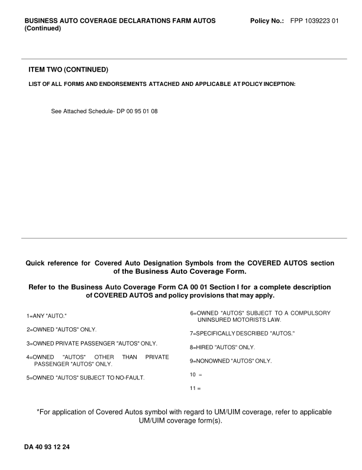
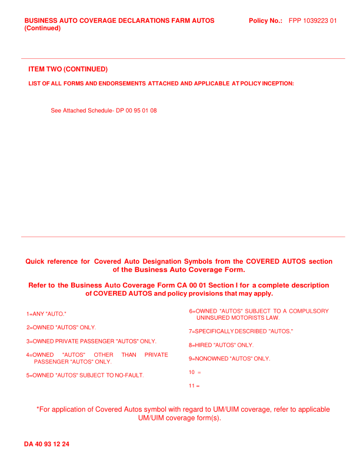
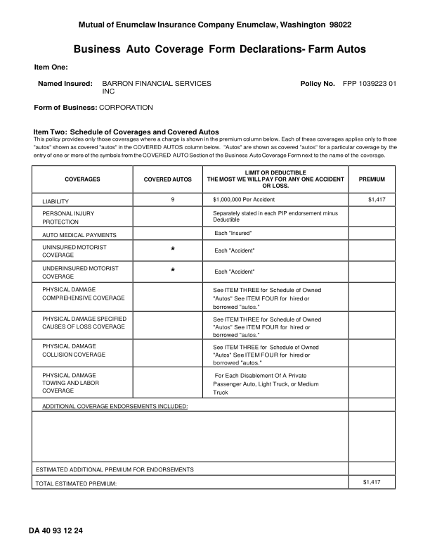
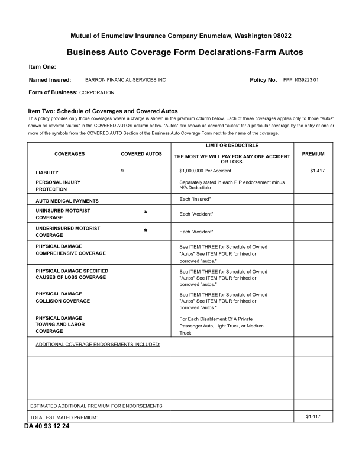
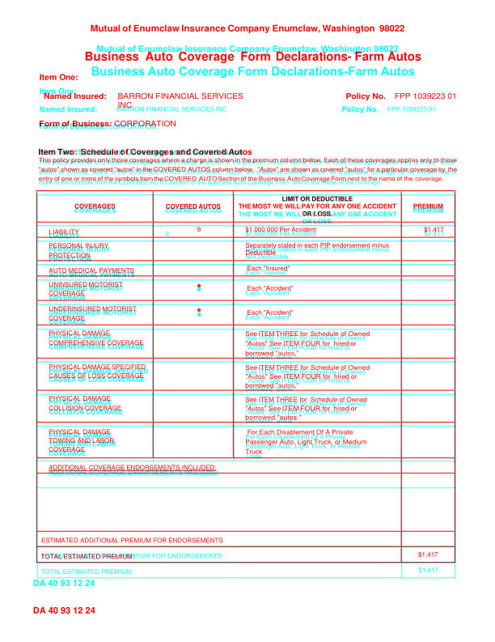
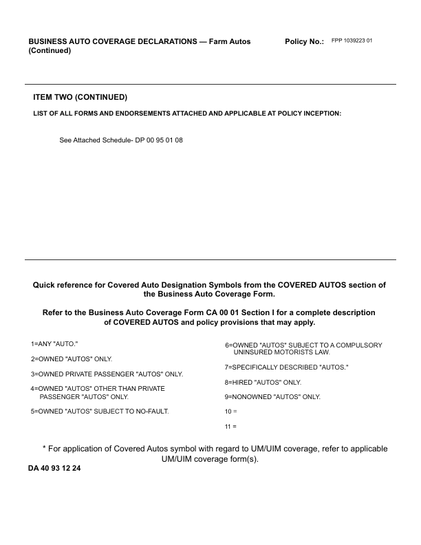

GhostDraft (TST) — page 2

HTML designer — page 2

Overlay — 4.4% pixels differ

DA4093_1224_no_units_NONOWN: DIFFERENT score 99.8% pages golden 2 html 2 (pages with text) words golden 422 html 424 missing 0 extra 2 EXTRA (in the HTML render, not in the GhostDraft golden) [N] <= N/A Deductible [A] <= 1=ANY "AUTO." 6=OWNED "AUTOS" SUBJECT TO A COMPULSORY golden C:\src\fact-docgen\src\Moe.Commercial.Documents.Generation.Integration.Tests\TestData\Snapshots\DA4093_1224_no_units_NONOWN\GoldenSnapshot.txt template C:\src\fact-poc\output\ghostdraft\batch\DA4093-1224.json serverxml C:\src\fact-poc\output\ghostdraft\serverxml\DA4093_1224_no_units_NONOWN\ServerXml.xml



moved Mutual (+7.3, +25.0)pt moved of (+6.3, +25.0)pt moved Enumclaw (+6.2, +25.0)pt moved Insurance (+4.2, +25.0)pt moved Company (+1.9, +25.0)pt moved Enumclaw, (+0.0, +25.0)pt moved Washington (-1.8, +25.0)pt moved 98022 (-6.7, +25.0)pt moved Business (+7.9, +18.1)pt moved Auto (+3.3, +18.1)pt moved Coverage (+0.5, +18.1)pt moved Form (-3.6, +18.1)pt moved Autos (-8.4, +18.1)pt moved Item (-0.0, +17.5)pt moved One: (-1.1, +17.5)pt moved Named (-5.4, +15.9)pt moved Insured: (-8.3, +15.9)pt moved BARRON (-1.3, +15.2)pt moved FINANCIAL (-11.7, +15.2)pt moved SERVICES (-24.5, +15.2)pt moved Policy (-5.0, +15.9)pt moved No. (-7.4, +15.9)pt moved FPP (-8.6, +15.2)pt moved 1039223 (-13.8, +15.2)pt moved 01 (-23.3, +15.2)pt moved Form (-0.0, +3.0)pt moved of (-1.6, +3.0)pt moved Business: (-3.0, +3.0)pt moved CORPORATION (-6.8, +3.0)pt moved Schedule (-3.5, +0.3)pt moved of (-5.0, +0.3)pt moved Coverages (-5.4, +0.3)pt moved and (-7.8, +0.3)pt moved Covered (-8.1, +0.3)pt moved Autos (-10.0, +0.3)pt moved This (-0.0, +2.2)pt moved policy (-0.6, +2.2)pt moved provides (-1.8, +2.2)pt moved only (-3.9, +2.2)pt moved those (-4.5, +2.2)pt moved coverages (-5.6, +2.2)pt moved where (-8.3, +2.2)pt moved a (-9.5, +2.2)pt moved charge (-9.2, +2.2)pt moved is (-10.7, +2.2)pt moved shown (-10.5, +2.2)pt moved in (-11.9, +2.2)pt moved the (-11.8, +2.2)pt moved premium (-12.1, +2.2)pt moved column (-14.2, +2.2)pt moved below. (-15.9, +2.2)pt moved Each (-17.7, +2.2)pt moved of (-18.7, +2.2)pt moved these (-18.5, +2.2)pt moved coverages (-19.6, +2.2)pt moved applies (-22.3, +2.2)pt moved only (-23.9, +2.2)pt moved to (-24.5, +2.2)pt moved those (-24.4, +2.2)pt moved "autos" (+493.6, -9.3)pt moved shown (-27.2, +2.7)pt moved as (-28.3, +2.7)pt moved covered (-28.3, +2.7)pt moved "autos" (-29.7, +2.7)pt moved in (-30.8, +2.7)pt moved the (-30.6, +2.7)pt moved COVERED (-30.7, +2.7)pt moved AUTOS (-34.0, +2.7)pt moved column (-36.4, +2.7)pt moved below. (-37.7, +2.7)pt moved "Autos" (-41.3, +2.7)pt moved are (-42.5, +2.7)pt moved shown (-42.7, +2.7)pt moved as (-44.0, +2.7)pt moved covered (-44.0, +2.7)pt moved "autos" (-45.4, +2.7)pt moved for (-46.7, +2.7)pt moved a (-46.7, +2.7)pt moved particular (-46.4, +2.7)pt moved coverage (-48.3, +2.7)pt moved by (-50.1, +2.7)pt moved the (-51.4, +2.7)pt moved entry (+467.6, -8.8)pt moved of (+467.6, -8.8)pt moved one (+467.4, -8.8)pt moved or (+467.1, -8.8)pt moved more (-52.8, +3.9)pt moved of (-53.6, +3.9)pt moved the (-53.8, +3.9)pt moved symbols (-54.2, +3.9)pt moved from (-55.7, +3.9)pt moved the (-56.2, +3.9)pt moved COVERED (-56.1, +3.9)pt moved AUTO (-60.1, +3.9)pt moved Section (-61.2, +3.9)pt moved of (-62.3, +3.9)pt moved the (-62.9, +3.9)pt moved Business (-63.4, +3.9)pt moved Form (-68.7, +3.9)pt moved next (-69.4, +3.9)pt moved to (-70.3, +3.9)pt moved the (-70.5, +3.9)pt moved name (-71.2, +3.9)pt moved of (-72.3, +3.9)pt moved the (-72.8, +3.9)pt moved coverage. (-74.2, +3.9)pt moved COVERAGES (-0.1, +4.9)pt moved COVERED (-0.2, +4.8)pt moved AUTOS (+0.7, +4.8)pt moved THE (+0.1, +9.4)pt moved MOST (+1.0, +9.4)pt moved WE (+1.1, +9.4)pt moved FOR (+1.3, +9.4)pt moved ANY (+1.0, +9.4)pt moved ONE (+1.1, +9.4)pt moved ACCIDENT (+0.7, +9.4)pt moved OR (+0.1, +9.2)pt moved LOSS. (+0.2, +9.2)pt moved 9 (-39.4, +4.6)pt moved $1,000,000 (+0.3, +4.6)pt moved Per (+0.3, +4.6)pt moved Accident (-0.2, +4.6)pt moved $1,417 (+0.4, +4.6)pt moved LIABILITY (+0.2, +4.6)pt moved PERSONAL (+0.3, +4.2)pt moved INJURY (+1.9, +4.2)pt moved Separately (+0.4, +4.8)pt moved stated (+0.4, +4.8)pt moved in (+0.3, +4.8)pt moved each (+0.3, +4.8)pt moved PIP (+0.3, +4.8)pt moved endorsement (+0.2, +4.8)pt moved minus (+0.1, +4.8)pt moved Deductible (+15.5, +4.6)pt moved PROTECTION (+0.3, +4.2)pt moved Each (-1.9, +4.9)pt moved "Insured" (-2.0, +4.9)pt moved AUTO (+0.2, +4.9)pt moved MEDICAL (+0.6, +4.9)pt moved PAYMENTS (+1.3, +4.9)pt moved UNINSURED (+0.2, +4.2)pt moved MOTORIST (+0.8, +4.2)pt moved Each (-1.9, +5.1)pt moved "Accident" (-2.0, +5.1)pt moved * (+0.2, +4.0)pt moved COVERAGE (+0.2, +4.5)pt moved UNDERINSURED (+0.2, +4.2)pt moved MOTORIST (+0.7, +4.2)pt moved Each (-1.9, +5.0)pt moved "Accident" (-2.0, +5.0)pt moved * (+0.2, +4.7)pt moved COVERAGE (+0.2, +4.0)pt moved PHYSICAL (+0.2, +4.1)pt moved DAMAGE (+1.6, +4.1)pt moved THREE (+0.2, +4.3)pt moved for (-0.5, +4.3)pt moved Schedule (-1.7, +4.3)pt moved of (-3.5, +4.3)pt moved Owned (-4.0, +4.3)pt moved COMPREHENSIVE (+0.2, +4.1)pt moved COVERAGE (+0.8, +4.1)pt moved "Autos" (+0.2, +4.3)pt moved See (-1.2, +4.3)pt moved ITEM (-1.6, +4.3)pt moved FOUR (-2.7, +4.3)pt moved for (-3.9, +4.3)pt moved hired (-6.5, +4.3)pt moved or (-6.8, +4.3)pt moved borrowed (+0.2, +4.3)pt moved "autos." (-1.6, +4.3)pt moved PHYSICAL (+0.2, +4.4)pt moved DAMAGE (+1.5, +4.4)pt moved SPECIFIED (+2.9, +4.4)pt moved See (+0.2, +4.4)pt moved for (-0.9, +4.4)pt moved Schedule (-2.1, +4.4)pt moved of (-3.5, +4.4)pt moved Owned (-4.0, +4.4)pt moved CAUSES (+0.2, +3.9)pt moved OF (+0.7, +3.9)pt moved LOSS (+0.6, +3.9)pt moved COVERAGE (+1.1, +3.9)pt moved "Autos" (+0.2, +3.9)pt moved See (-1.2, +3.9)pt moved ITEM (-2.0, +3.9)pt moved FOUR (-3.1, +3.9)pt moved for (-4.4, +3.9)pt moved hired (-7.0, +3.9)pt moved or (-7.9, +3.9)pt moved borrowed (+0.2, +4.1)pt moved "autos." (-1.6, +4.1)pt moved PHYSICAL (+0.2, +3.9)pt moved DAMAGE (+0.9, +3.9)pt moved See (+0.3, +4.1)pt moved ITEM (+0.3, +4.1)pt moved THREE (+0.1, +4.1)pt moved for (+0.1, +4.1)pt moved Schedule (-1.9, +4.1)pt moved of (-2.0, +4.1)pt moved Owned (-2.0, +4.1)pt moved COLLISION (+0.2, +3.9)pt moved COVERAGE (+1.6, +3.9)pt moved "Autos" (+0.3, +3.6)pt moved See (+0.2, +3.5)pt moved ITEM (-0.4, +3.5)pt moved FOUR (-1.4, +3.5)pt moved for (-3.6, +3.5)pt moved hired (-6.2, +3.5)pt moved or (-7.5, +3.5)pt moved borrowed (+0.2, +3.8)pt moved "autos." (-3.4, +3.8)pt moved PHYSICAL (+0.2, +3.8)pt moved DAMAGE (+0.6, +3.8)pt moved For (-2.1, +4.9)pt moved Each (-2.8, +4.9)pt moved Disablement (-3.9, +4.9)pt moved Of (-6.2, +4.9)pt moved A (-7.2, +4.9)pt moved Private (-8.0, +4.9)pt moved TOWING (+0.2, +3.5)pt moved AND (-0.2, +3.5)pt moved LABOR (+0.8, +3.5)pt moved Passenger (+0.2, +4.2)pt moved Auto, (-2.3, +4.2)pt moved Light (-3.3, +4.2)pt moved Truck, (-4.5, +4.2)pt moved or (-6.0, +4.2)pt moved Medium (-6.5, +4.2)pt moved COVERAGE (+0.2, +3.8)pt moved Truck (+0.2, +4.3)pt moved ADDITIONAL (+0.3, +3.9)pt moved COVERAGE (+0.8, +3.9)pt moved ENDORSEMENTS (+1.8, +3.9)pt moved INCLUDED: (+3.0, +3.9)pt moved ESTIMATED (+0.2, +18.2)pt moved ADDITIONAL (-0.8, +18.2)pt moved PREMIUM (-1.2, +18.2)pt moved FOR (-1.2, +18.2)pt moved ENDORSEMENTS (-1.2, +18.2)pt moved $1,417 (+0.4, +18.0)pt moved TOTAL (+0.2, +17.6)pt moved ESTIMATED (-0.7, +17.6)pt moved PREMIUM: (-1.4, +17.6)pt moved DA (-0.0, -34.9)pt moved 40 (-0.4, -34.9)pt moved 93 (-0.4, -34.9)pt moved 12 (-0.4, -34.9)pt moved 24 (-0.4, -34.9)pt size BARRON 10.0 -> 8.0pt size FINANCIAL 10.0 -> 8.0pt size SERVICES 10.0 -> 8.0pt size FPP 10.0 -> 8.0pt size 1039223 10.0 -> 8.0pt size 01 10.0 -> 8.0pt size CORPORATION 10.0 -> 8.0pt size LIABILITY 8.2 -> 8.0pt size PERSONAL 8.0 -> 8.0pt size INJURY 8.0 -> 8.0pt size PROTECTION 8.0 -> 8.0pt size AUTO 8.0 -> 8.0pt size MEDICAL 8.0 -> 8.0pt size PAYMENTS 8.0 -> 8.0pt size UNINSURED 8.0 -> 8.0pt size MOTORIST 8.0 -> 8.0pt size COVERAGE 8.0 -> 8.0pt size UNDERINSURED 8.0 -> 8.0pt size MOTORIST 8.0 -> 8.0pt size COVERAGE 8.0 -> 8.0pt size PHYSICAL 8.0 -> 8.0pt size DAMAGE 8.0 -> 8.0pt size COMPREHENSIVE 8.0 -> 8.0pt size COVERAGE 8.0 -> 8.0pt size PHYSICAL 8.0 -> 8.0pt size DAMAGE 8.0 -> 8.0pt size SPECIFIED 8.0 -> 8.0pt size CAUSES 8.0 -> 8.0pt size OF 8.0 -> 8.0pt size LOSS 8.0 -> 8.0pt size COVERAGE 8.0 -> 8.0pt size PHYSICAL 8.0 -> 8.0pt size DAMAGE 8.0 -> 8.0pt size COLLISION 8.0 -> 8.0pt size COVERAGE 8.0 -> 8.0pt size PHYSICAL 8.0 -> 8.0pt size DAMAGE 8.0 -> 8.0pt size TOWING 8.0 -> 8.0pt size AND 8.0 -> 8.0pt size LABOR 8.0 -> 8.0pt size COVERAGE 8.0 -> 8.0pt missing h rule at 235.7 (46.0-562.0) missing h rule at 274.3 (46.0-562.0) missing h rule at 293.2 (46.0-562.0) missing h rule at 322.0 (46.0-562.0) missing h rule at 341.0 (46.0-562.0) missing h rule at 371.1 (46.0-562.0) missing h rule at 401.3 (46.0-562.0) missing h rule at 442.4 (46.0-562.0) missing h rule at 482.1 (46.0-562.0) missing h rule at 521.5 (46.0-562.0) missing h rule at 565.7 (46.0-562.0) missing h rule at 581.4 (60.2-267.0) missing h rule at 584.4 (46.0-562.0) missing h rule at 656.3 (46.0-562.0) extra h rule at 240.4 (45.8-563.2) extra h rule at 278.6 (45.8-563.2) extra h rule at 297.4 (45.8-563.2) extra h rule at 326.6 (45.8-563.2) extra h rule at 345.4 (45.8-563.2) extra h rule at 375.4 (45.8-563.2) extra h rule at 406.1 (45.8-563.2) extra h rule at 446.6 (45.8-563.2) extra h rule at 486.4 (45.8-563.2) extra h rule at 525.4 (45.8-563.2) extra h rule at 568.9 (45.8-563.2) extra h rule at 601.9 (45.8-563.2) extra h rule at 712.9 (45.8-563.2) extra v rule at 46.1 (240.0-713.2) extra v rule at 496.9 (240.0-713.2) extra v rule at 562.9 (240.0-713.2)


missing h rule at 99.4 (36.0-586.8) missing h rule at 402.1 (36.0-586.8)
